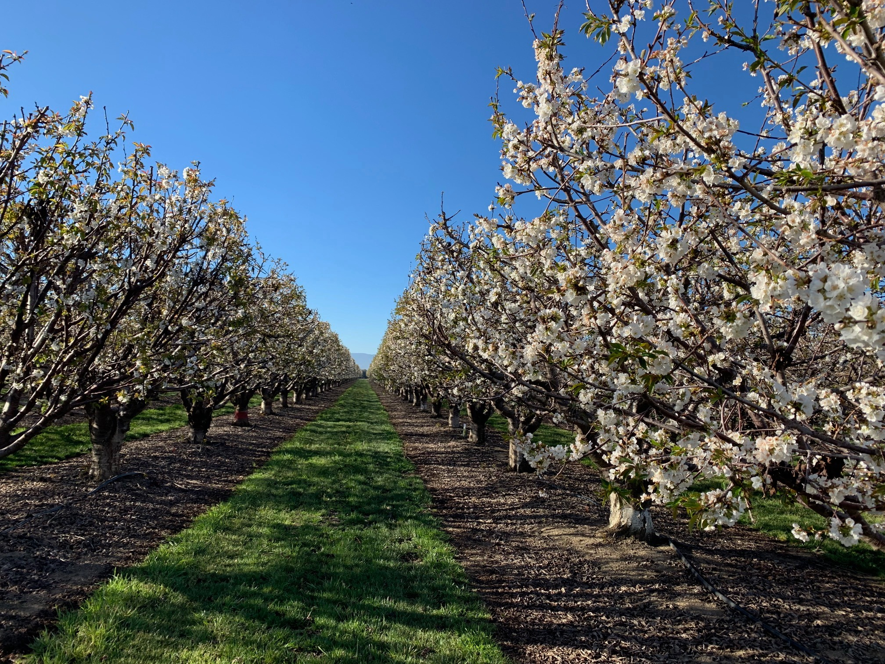
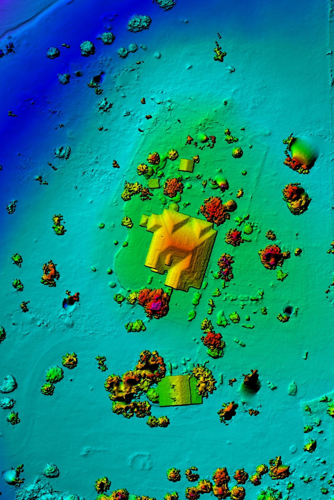

Aerial Mapping
Current high-resolution imagery, orthomosaics, site basemaps, and measurements collected for a specific property or project area.

Aerial mapping, orthomosaics, GIS support, and field mapping for agriculture and land-based projects.
FAA Part 107 certified
Services
Current high-resolution imagery, orthomosaics, site basemaps, and measurements collected for a specific property or project area.
Map production, acreage and distance measurements, spatial data organization, and GIS layers for agriculture, property, and land projects.
Field data collection, verification, and mobile mapping workflows that connect what is on the ground with usable GIS data.

Mapping & analysis
Drone imagery can be processed into georeferenced maps and combined with GIS data for measurements, site documentation, comparison, and field planning.

Experience
Background in agricultural drone operations, orchard mapping, GIS analysis, and field data collection.
M.S. in Geographic Information Science and FAA Part 107 Remote Pilot certification.
Service area
Available for projects throughout the western U.S. and beyond, depending on project scope.
Contact
Send a brief description of the site or project and the type of map, measurement, imagery, or GIS support you need.